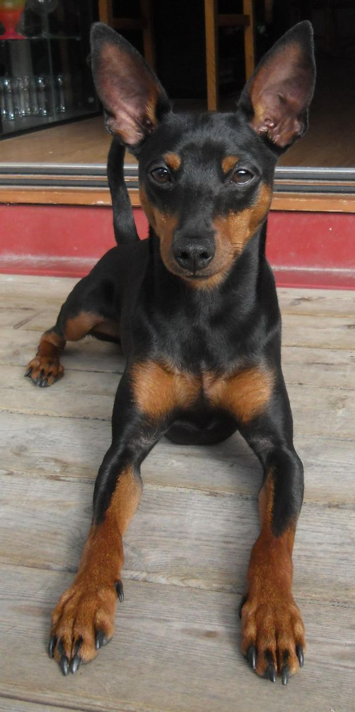
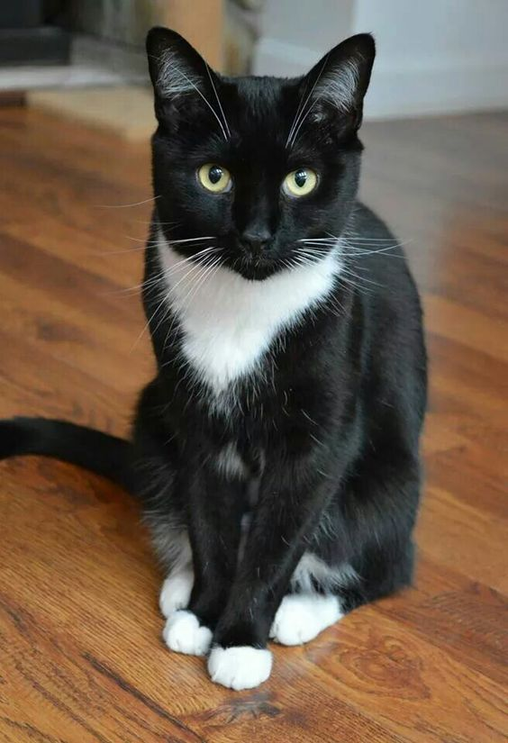
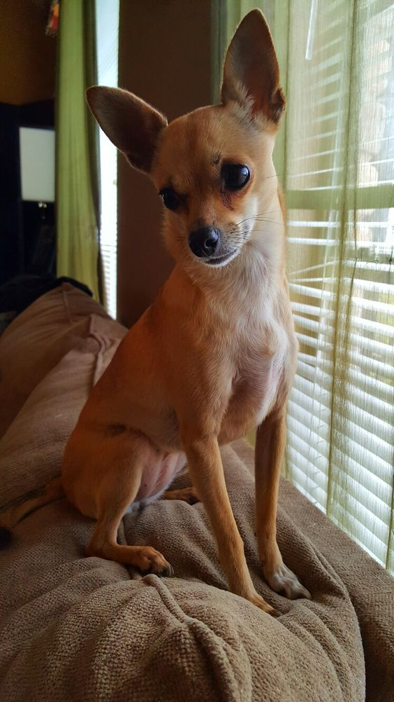
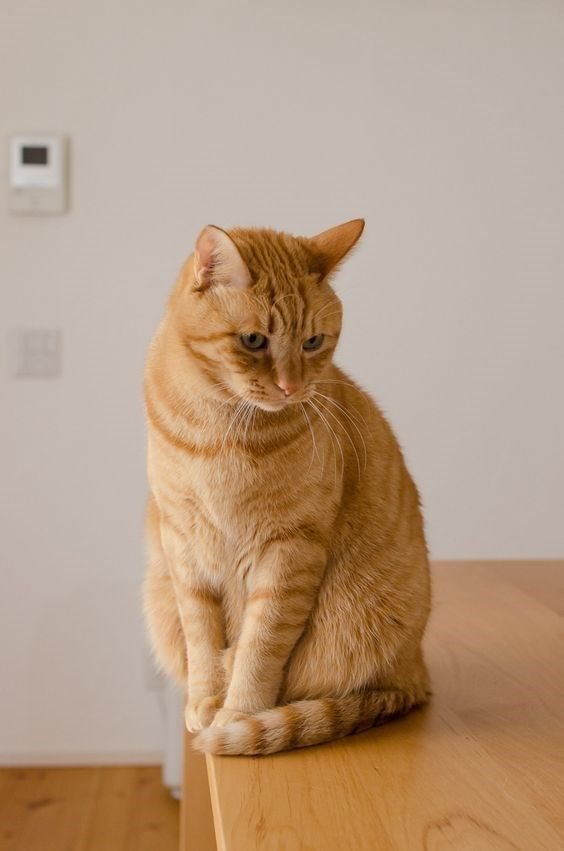
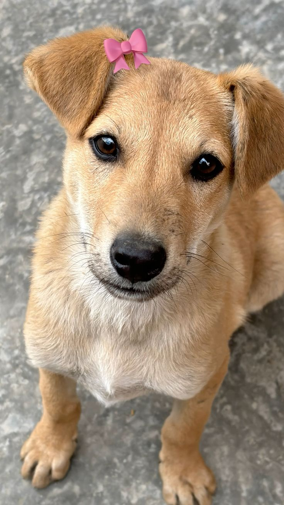
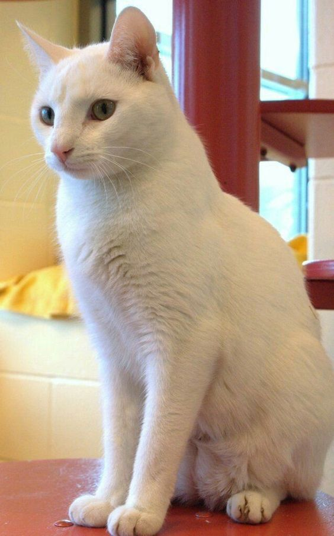

Encontre seu novo amigo e aprenda a cuidar melhor dos seus pets!
Pets Disponíveis para Adoção

Thor

Dirceu

Malu

Tonho

Lilica

kira
Sobre Nós
Somos uma iniciativa dedicada a resgatar e encontrar lares amorosos para animais abandonados. Acreditamos que todos os pets merecem uma segunda chance e fazemos o possível para dar a eles um futuro melhor. Nossa missão é conscientizar sobre a importância da adoção e garantir que cada animal encontre um lar seguro e amoroso.
Cuidados Essenciais com Pets
Os cuidados com os pets adotados são essenciais para que tenham uma vida longa e feliz. Aqui estão algumas dicas importantes:
1. Alimentação
Qualidade da Ração: Escolha uma ração de alta qualidade, apropriada para a idade, porte e saúde do animal. Evite alimentá-los com restos de comida humana, pois muitos ingredientes são prejudiciais.
Quantidade e Frequência: Mantenha horários regulares e ofereça a quantidade correta de acordo com o peso e nível de atividade do animal. Alimentação em excesso pode levar à obesidade, enquanto a falta pode prejudicar o desenvolvimento.
Água Fresca: Ofereça água fresca e limpa constantemente. Para gatos, que tendem a beber menos, fontes de água podem incentivá-los.
2. Saúde
Vacinação e Vermifugação: Mantenha as vacinas em dia para prevenir doenças graves, como a cinomose e a raiva. Vermifugue regularmente para evitar parasitas internos.
Consultas Veterinárias: Leve seu pet ao veterinário ao menos uma vez por ano para check-ups e exames de rotina. Idosos ou pets com problemas de saúde podem precisar de acompanhamento mais frequente.
Higiene Bucal e Corporal: Escove os dentes do pet para evitar problemas dentários. Escovar o pelo e dar banhos periódicos ajudam a manter a pele saudável. Cães precisam de banhos regulares, enquanto gatos se limpam sozinhos, mas podem precisar de banhos ocasionais e tosa.
Controle de Pulgas e Carrapatos: Use antipulgas e anticarrapatos para proteger o animal e o ambiente de infestações.
3. Lazer e Enriquecimento Ambiental
Exercícios e Brincadeiras: Cães precisam de passeios diários e brincadeiras para manter-se ativos. Gatos também devem ter estímulos, como brinquedos interativos e arranhadores, para se exercitarem.
Espaço Seguro: Cães precisam de espaço para correr e se exercitar, enquanto gatos gostam de locais seguros para explorar e se esconder. Gatos de apartamento podem se beneficiar de redes nas janelas e prateleiras altas.
Enriquecimento Mental: Jogos e brinquedos que incentivem o raciocínio ajudam a manter cães e gatos mentalmente estimulados, o que reduz estresse e comportamentos destrutivos.
Outros Cuidados Importantes
Socialização: Ambos cães e gatos se beneficiam da socialização, seja com outros animais ou com pessoas. Isso ajuda a prevenir comportamentos agressivos ou medrosos.
Castração: A castração evita problemas de saúde, como alguns tipos de câncer, e comportamentos indesejados, além de prevenir crias indesejadas.
Identificação: É fundamental que cães e gatos tenham uma coleira com plaquinha de identificação e, se possível, microchip. Isso facilita o retorno caso eles se percam.
Estes cuidados básicos contribuem para uma vida longa, saudável e feliz para cães e gatos, além de promover uma relação harmoniosa com os tutores!
Vacinação: Vacine seu pet para prevenir doenças.
Alimentação: Dê uma alimentação balanceada de acordo com a idade e necessidades do pet.
Exercício: Caminhe e brinque regularmente para garantir a saúde física e mental.
Higiene: Mantenha o pet limpo e cuide da escovação dos pelos.
Amor e Atenção: Interaja e crie laços fortes para que ele se sinta amado e seguro.